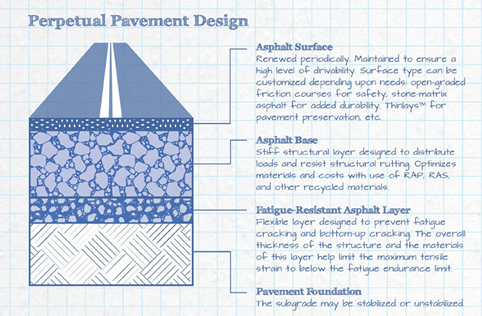
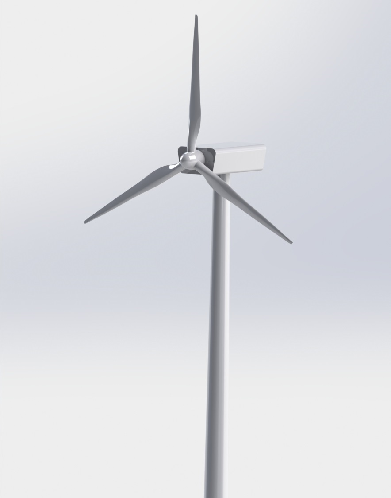
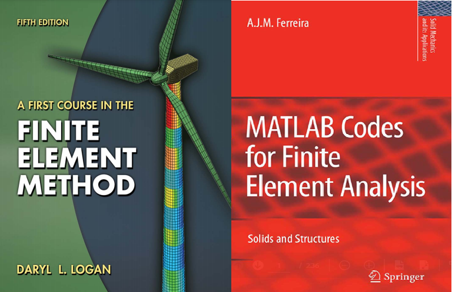

Proyectos

Pavimentos Perpetuos
La evolución de los medios de transporte terrestre requieren infraestructuras viales capaces de soportar esfuerzos y deformaciones severos. La tecnología de pavimentos los perpetuos son capaces de soportar dichas demandas.
"En Curso"

Turbina Eólica
La extracción de la energía cinética de los vientos para transformarlos en energías que sean útiles para las personas, por ejemplo, la electricidad, es un reto; sin embargo, es una excelente alternativa para reducir las contaminaciones ambientales.
"En Curso"

MATLAB & FEM
El uso de matematicas avanzadas para realizar modelos computacionales es importante ya que te brinda mejor entendimiento sobre el problema
"Libro"

Mecánica de Fracturas
"Libro"